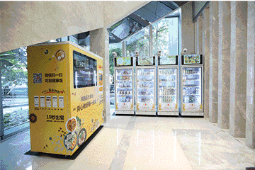
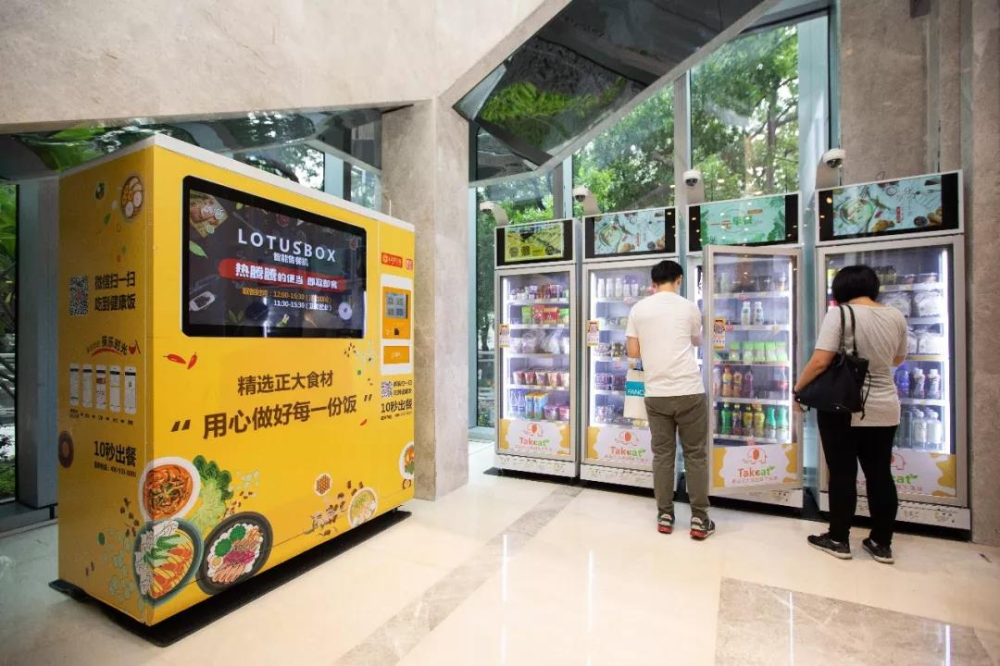
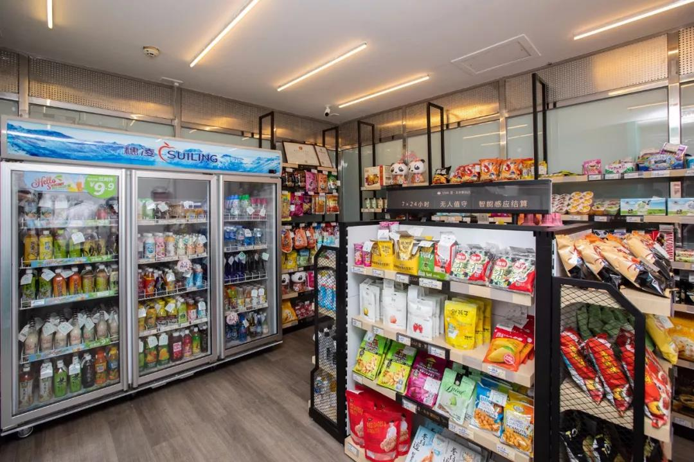
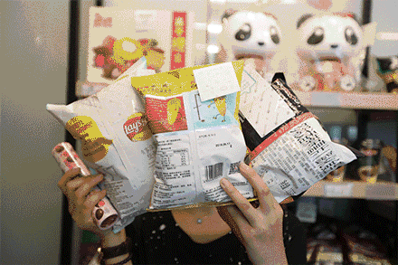
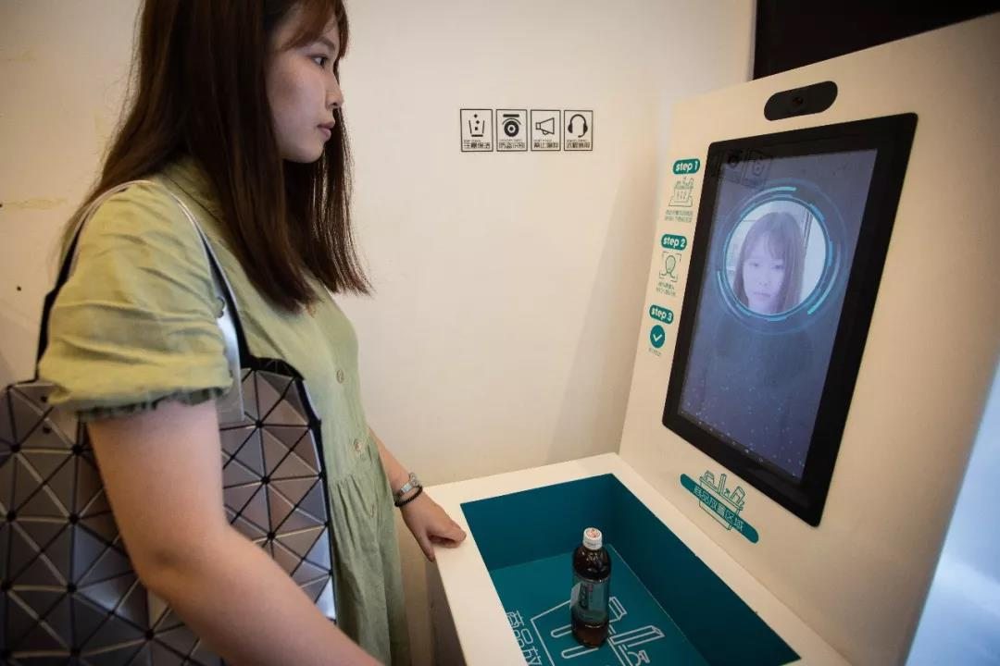
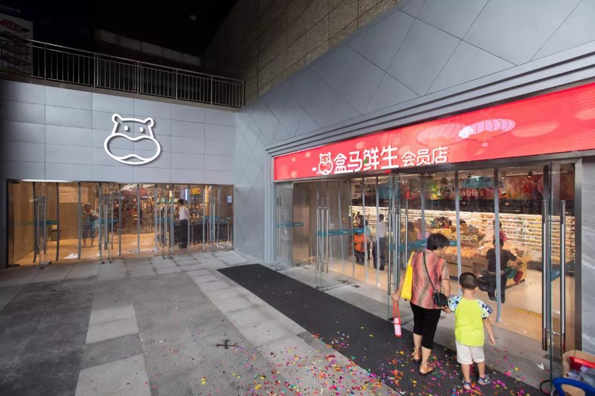
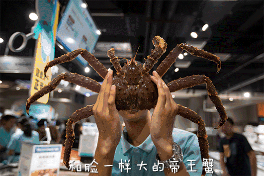
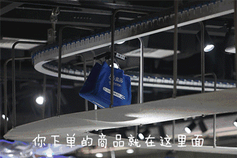

生猛海鲜30分钟免费送到家！越秀“新零售”刷新你的想象
手机下单买菜,30分钟内会有小哥哥,将你挑选的新鲜蔬菜水果生鲜送到你手上;
一个超市连个服务员都没有,但只要拿着商品走到门口,扫码开门时就会提示你需支付多少钱;
这些都是越秀的新零售企业！有没有觉得很神奇？这些“高科技”除了自带新鲜感,更多的是为我们生活提供了便利、节省了时间。一起来体验一下吧~
智能售餐机——口味多样，10秒取到热腾腾的餐食
一天三大难题：早上吃什么？中午吃什么？晚上吃什么？还有什么比为你配好餐，帮你加热好，就等你去pick更贴心的呢？

智能售餐机只在餐点时间销售,并内置加热恒温系统,到手都是还冒着热气的饭菜,最适合生活节奏快的上班一族了~并且盒饭在机器内只保存4个小时,保证食品的新鲜。

智能无人便利店——进出、结算全靠一扇“门”，买单更快捷

小小的超市内有乾坤,没有营业员是怎么肥（回）四（事）？为什么每件商品都有身份证？EASYGO无人值守智能便利店,就是这么酷炫！

我们只需要：①扫码进门；②选择我们需要的商品；③扫码开门；④结账出门。四步完成！

今年，EASYGO还推出智能咖啡机Wecafé,配套进入越秀写字楼、酒店公寓等。并与微信支付深度合作，尝试刷脸支付,旨在为街坊们提供更多便捷与个性化服务。
今天，又有一家新零售商店——盒马鲜生（保利中环店）,在越秀开业啦！走~进去瞧瞧~
盒马鲜生——3公里范围内，最快30分钟免费配送

秉着商品新鲜、安全可溯源的原则,保障消费者舌尖上的安全。更让人省心的是,盒马支持线上下单,3公里范围内最快30分钟免费配送↓
哪些属于盒马鲜生（保利中环店）3公里配送范围？
目前涵盖了周围的写字楼、政府大楼、电视台。中华广场、东山广场、珠江国际大厦、广州友谊商店、时代地产中心以及广东电视中心等都可免费送达，淘金社区、淘金家园、东贤里小区、麓景路小区、科苑社区、洪都大厦等。

我们可以去实体店选购来自全球的商品,也可以手机下单,快递小哥哥会以最快速度,把你的商品完好无损送到你家。是不是超方便der~

传统的购物模式,我们必须亲自到零售商店选购,并把选购的商品交由营业员过机结算；而“新零售”模式,自主购买或是手机下单,均为线上支付,交易步骤简化了,但食品的品质依然有所保障。
“新零售”到底是什么概念？越秀还有哪些新零售业态？又是如何打造“国际消费中心城市示范区”的？越秀山君带你知多D~
什么是“新零售”？
“新零售”主要是消费体验+零售体验的双重升级，它的最大趋势是线上、线下、物流、数据、供应链的资源整合。实现“互联网+电商”和“实体+零售”从冲突和竞争向融合和互通的转化。对我们消费者而言，我们可以体验“网购”的快感，能看到实物也会使我们更放心。
越秀有哪些新零售业态？
EASYGO智能无人便利店、Webox智能货柜、正大自动售餐机器、微信刷脸支付屏幕等新零售智能设备在越秀区范围内如雨后春笋，不断涌现；软硬天师无人销售装饰体验中心等新模式铺开运行；中国首个屈臣氏Colorlab全新彩妆概念店、京东首家无人超市JOY SPACE快闪店在越秀开业。
越秀如何打造国际消费中心城市示范区？
加快推进环市东、海珠广场、海印商圈等大型商贸综合体改造升级，实现商贸与旅游、文化、会展、餐饮、休闲等行业跨界融合发展。
推动越秀区旅游资源、文化资源走出国门，吸引“一带一路”沿线国家游客入境消费，培育新消费增长点。通过一进一出的方式助力越秀区提升国际影响力。
以打造国际消费中心示范区为目标，切实做优做强“千年商都核心”，充分发挥越秀区老字号聚集、文化内涵丰富特色，将传统行业与消费新业态融合。